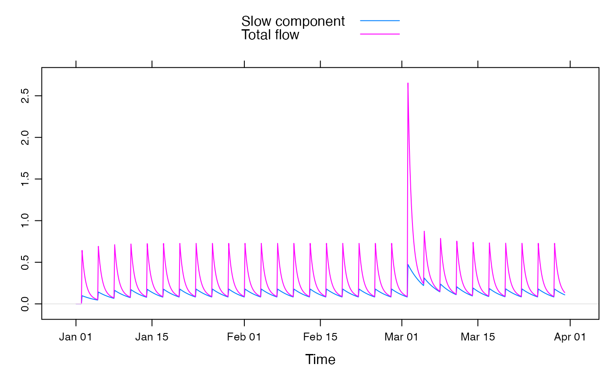
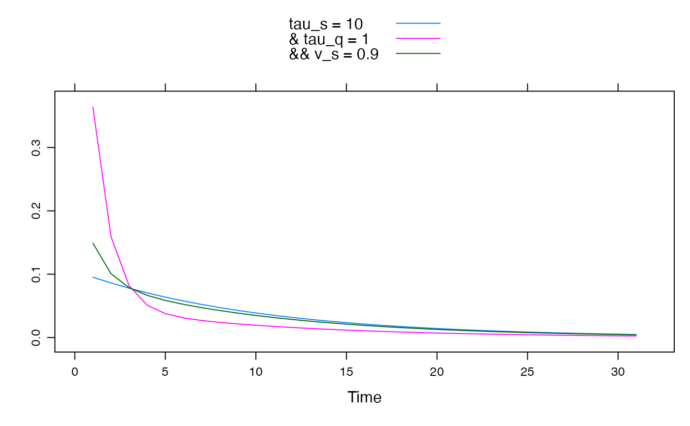

A unit hydrograph (linear transfer function) defined as a system of exponentially receding components. Each component is defined by its time constant and fractional volume, and if there are multiple (up to 3) such components they may be in a parallel and/or series configuration.
expuh.ls.fit( DATA, order = hydromad.getOption("order"), delay = hydromad.getOption("delay"), quiet = FALSE, ... )
| DATA | Placeholder |
|---|---|
| order | Placeholder |
| delay | Placeholder |
| quiet | Placeholder |
| ... | Placeholder |
the model output as a ts object, with the same
dimensions and time window as the input U. If
return_components = TRUE, it will have multiple columns named
Xs, Xq and, if relevant, X3.
The expuh model is a transfer function translating an input time
series U into an output series X. It describes a configuration
of exponentially decaying components, each defined by a recession rate
\(\alpha\) and peak response \(\beta\). However, in hydrology these
parameters are more easily interpreted in terms of time constants \(\tau\)
(number of time steps to reduce to a fraction \(1/e\), 37%) and
fractional volumes v. These are directly related as:
$$\tau = -1 / \log(\alpha)$$
$$v = \beta / (1 - \alpha)$$
If there are two components in parallel, these are conventionally called slow (s) and quick (q) flow components. The total simulated flow X is the sum of these; \(X[t] = X_s[t] + X_q[t]\), and:
$$X_s[t] = \alpha_s X_s[t-1] + \beta_s U[t]$$ $$X_q[t] = \alpha_q X_q[t-1] + \beta_q U[t]$$
Two components might also be arranged in series rather than parallel, in which case:
$$X_s[t] = \alpha_s X_s[t-1] + \beta_s U[t]$$ $$X[t] = \alpha_q X[t-1] + \beta_q X_s[t]$$
This configuration is specified by the argument series = 1. The
default series = 0 specifies all components to be in parallel.
In the case of three components, with corresponding time constants
\(\tau_s\), \(\tau_q\) and \(tau_3\) (tau_s, tau_q, tau_3),
there are four possible types of configuration:
all 3 components in parallel, i.e.
independent flows: X = s + q + 3. In this case v_q defaults to
1 - v_s - v_3 in order to ensure that the total volume is 1.
one component in parallel with two in series: the
q component is in series with the 3 component, and the
s component is in parallel: X = (q * 3) + s. In this case
v_q defaults to 1.
two components in
parallel with one in series: the s and q components are in
parallel and the 3 component is in series: X = 3 * (s + q). In
this case v_q defaults to 1 - v_s in order to ensure that the
total volume of the parallel component is 1. The total volume will be 1 if
v_3 is also 1.
all 3 components in
series: X = s * q * 3. In this case v_q defaults to 1. The
total volume will be 1 if v_s and v_3 are also 1.
Jakeman, A.J., I.G. Littlewood, and P.G. Whitehead (1990), Computation of the instantaneous unit hydrograph and identifiable component flows with application to two small upland catchments, Journal of Hydrology, 117: 275-300.
Felix Andrews felix@nfrac.org
data(HydroTestData) mod1 <- hydromad(HydroTestData, routing = "expuh", tau_s = 30, tau_q = 5, v_s = 0.5 ) flowcomps <- predict(mod1, return_components = TRUE) xyplot(cbind( `Slow component` = flowcomps[, "Xs"], `Total flow` = flowcomps[, 1] + flowcomps[, 2] ), superpose = TRUE ) + latticeExtra::layer(panel.refline(h = 0))U <- ts(c(1, rep(0, 30))) xyplot(cbind( "tau_s = 10" = expuh.sim(U, tau_s = 10), "& tau_q = 1" = expuh.sim(U, tau_s = 10, tau_q = 1, v_s = 0.5), "&& v_s = 0.9" = expuh.sim(U, tau_s = 10, tau_q = 1, v_s = 0.9) ), superpose = TRUE )